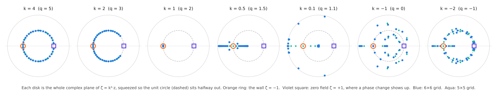
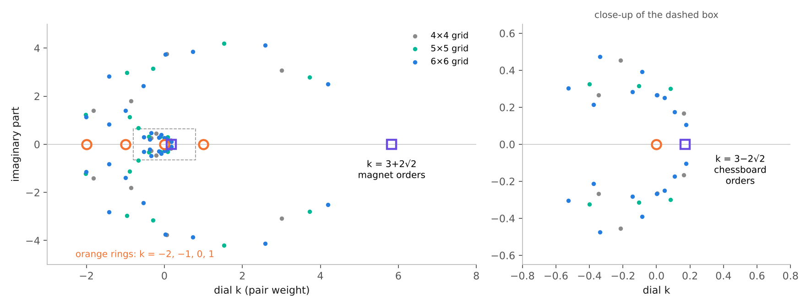
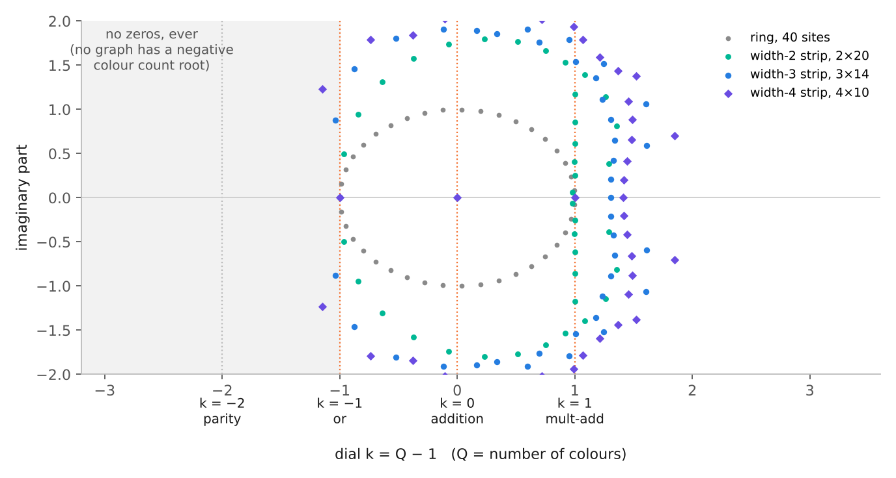
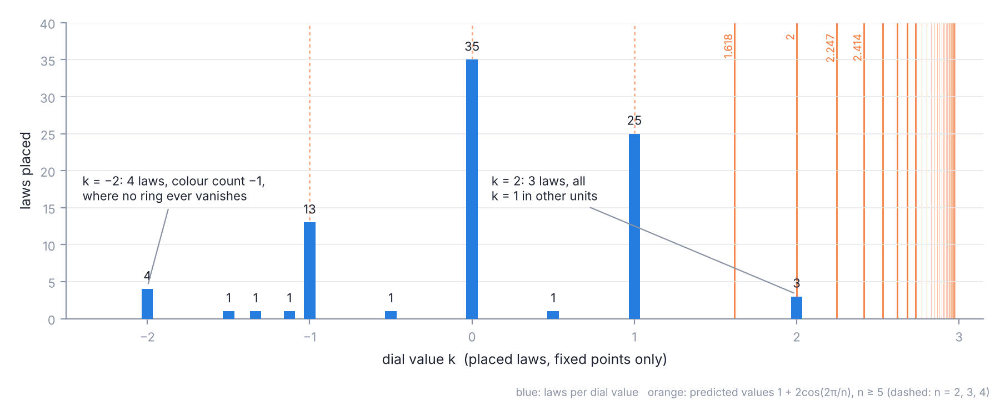

The dial's wall is where the zeros start, not where phases change
Build a partition function from the dial and its zeros always begin at the wall 1 + k·z = 0. A phase change needs the zeros to reach the opposite point, zero field. In the dial gas only q = 2 and q = 1 change the picture; real phase changes happen at q ≈ 6.83 and 1.17. Count colours instead (the Potts model, where the dial is k = Q − 1) and q = 0, 1, 2 do act as walls, while the parity point q = −1 never does. That reading predicted more special dial values; the laws on the landscape do not sit at them, so the lead is closed. A second test asked whether phase changes fill like a cup and then spill, as the rungs might: the rungs never do, and the landscape's border does, but by a different mechanism from latent heat.
Dial k, with q = k + 1. 190 numerical checks pass, plus a cluster test over 85 placed laws and a fill-then-spill test; 59 Lean theorems compile in core Lean with no sorry. Nothing here is a new theorem of physics; the readings marked new are new to this project.
The whole ζ = k·z plane, squeezed into a disk: the dashed unit circle sits halfway out, the rim is infinity. Orange ring: the wall ζ = −1. Violet square: zero field ζ = +1.
Turn the dial
One edge of the dial gas is the weighted lift itself: 1 + (x ⊞ₖ y) = 1 + x + y + k·xy is two sites with fugacities x, y and pair weight k. Chain n edges into a ring and the zeros come out in closed form: ζ + 1/ζ runs from −2 (the wall) to 2 − 4/k.
k = 3.00 q = 4.00
ring size
k < 0 (q < 1) full circle, then out along the positive line: zeros pass zero field
0 < k < 1 on the negative line, both sides of the wall
k = 1 (q = 2) every zero on the wall
k > 1 (q > 2) arc of the unit circle, gap at zero field
What the ring proves
The wall is always on the zero set. The ring's transfer matrix is [[1, z], [1, k·z]] and its trace is the weighted lift 1 + k·z. On the wall the trace is 0, so the matrix squares to a multiple of the identity and every odd power has trace 0. Every odd ring vanishes exactly at z = −1/k, for every k. proved in Lean
On any lattice it is the up–down flip point. On a grid where each site has d bonds the wall becomes 1 + k^(d/2)·z = 0, and every grid with an odd number of sites vanishes there (checked on 3×3, 3×5, 5×5). In magnet language this is the imaginary field iπ/2, where the up and down states cancel. known
The zeros fill one segment. In s = ζ + 1/ζ the ring's zeros run from s = −2 to s = 2 − 4/k. A phase change needs them to reach s = 2 (zero field). That happens only for k < 0, or as k → ∞; a real ring with k > 0 never changes phase, as physics expects. new reading
Two of the four special values matter here. At q = 2 the segment shrinks onto the wall (the gas is free). At q = 1 the far end 2 − 4/k passes through infinity and the zeros switch sides. At q = 0 and q = −1 nothing changes shape. new reading
On a flat grid the phase changes sit elsewhere
The same gas on 5×5 and 6×6 grids (wrapped into a torus). For k > 1 every zero sits on one circle, as Lee and Yang proved; the gap at zero field closes as the grid grows only past k = 3 + 2√2. Below k = 1 the zeros leave the circle. For negative k they crowd onto zero field.

Hold the field at zero and solve for the dial instead (Fisher zeros). The zeros close in on k = 3 + 2√2 ≈ 5.83 (the magnet orders, q ≈ 6.83) and k = 3 − 2√2 ≈ 0.17 (sites fill like a chessboard, q ≈ 1.17). None comes within 0.2 of k = −2, −1, 0 or 1.

Count colours and the special values become walls
For the Potts model with Q colours the edge matrix, scaled, has trace 1 + (Q − 1)·t with t = v/(Q + v). So the dial here is k = Q − 1, and your q is exactly the number of colours. A Potts ring is (Q + v)ⁿ·(1 + k·tⁿ), the weighted lift of tⁿ, and two separate rings combine by ⊞ₖ. Proper colourings are t = −1/k: the wall.

Special value
Colour count there
Status
q = 0, or (k = −1)
zero for every graph with an edge
known ring case in Lean
q = 1, addition (k = 0)
zero for every graph with an edge
known ring case in Lean
q = 2, the circle operation ∘₁ (called mult-add before 1.0) (k = 1)
zero exactly when the graph has an odd loop; even strips pile zeros onto it (distance 0.00002 at 3×14)
known ring case in Lean
q = −1, parity (k = −2)
never zero: the count is ± the number of acyclic orientations (2ⁿ − 2 on a ring)
known ring case in Lean
These are the first Beraha numbers, Q = 4cos²(π/n), where colour zeros of planar lattices pile up (Beraha, Kahane and Weiss; Tutte; Jackson for the zero-free gap up to 32/27). On the dial they are k = 1 + 2cos(2π/n): −1, 0, 1, then 1.618, 2, 2.247 … up to 3. Parity is not in the list.
Do the landscape's laws sit at the predicted values? No.
If the colour-count reading were the reason behind the dial, laws should gather at the next values it predicts, k = 1 + 2cos(2π/n): 1.618, 2, 2.247, 2.414, 2.532, 2.618 and on up to 3. I collected every law placed at a fixed point on the landscape, thermodynamics, simple-laws and statistics pages: 85 laws at 10 distinct dial values. Eleven families that sweep a whole line (Tsallis, the law of cosines, elliptic curves, channel noise and others) can land anywhere, so they are listed but not scored.

Test
Result
Reading
Laws within 0.01 of a predicted value above 1.5
3 laws, all at k = 2 (2× leverage, the Euler cusp, rung 2); none at the seven non-whole values
One hit, at the one prediction that is a whole number
Fair null 1: eight random values in the same span
Hit at least that well 9.9% of the time
Not distinguishable from chance
Fair null 2: eight “simple” numbers (fractions with denominator up to 4)
Hit at least that well 80% of the time
Simple numbers explain the hit as well as the prediction does
Whole dial, five values each: predicted −1, 0, 1, 1.618, 2 against the whole numbers −2 to 2
76 laws against 80; the whole numbers win on likelihood (128 vs 150)
The missing four are at k = −2, the parity point
Change of units, a ↦ λa
Turns dial value λk into k; the three laws at k = 2 all sit at k = 1 in units of 2
On the q = 0 axis a positive dial value is a choice of units, not a property of a law
The sharpest point is k = −2. It holds four laws (parity and bit flips, bit-flip noise, Ising bonds in series, Stokes' pile of plates), more than k = 2 does, and it is exactly the colour count Q = −1 where no ring's count ever vanishes. The landscape clusters where the colour-count reading says nothing happens.
The predicted values are tied to a scale because a Potts edge has the fixed form 1 + (Q − 1)·t. A law on the landscape carries its own units, so its dial value is only fixed up to that rescaling; off the axis the unit-free number is k²/q. Census: cluster/landscape_census.csv; test: cluster_test.py, output in cluster/cluster_output.txt.
Do phase changes fill like a cup and then spill, as the rungs might? Two of three places do, for different reasons.
“Fill then spill” has a precise meaning in heat: while ice melts you keep pouring heat in and the temperature stays flat (the latent heat), then it moves again. I looked for that shape in three places: between the rungs, at the landscape's border (where two walls merge and turn complex), and in the two partition functions built from the dial.
Where
What I found
Reading
Between the rungs
The rung curve is (s, s(s − 1)/4), and its unit-free shape number is exactly s, so it moves at a constant pace. The standard flow E^s(x) speeds up steadily; its rung-locked wobble is 0.00001, against ±0.1 for other valid interpolations and −1.2 for a staircase drawn on purpose.
No fill, no spill. A pause at each rung would have to be put in by hand.
The landscape's border
Repeat a law with a small step. In the two-walls country the value settles into a wall and stays. Just past the border it climbs to where the double wall used to be, lingers, then spills through infinity and comes round. The linger grows as (4q − k²)^(−1/2), and twelve random laws at the same distance take the same time to 2%.
A real fill, linger, spill. It is the standard bottleneck of any fold: ten random smooth folds give the same −1/2.
Colour counts (k = colours − 1)
The exact latent heat (Baxter 1973) is zero up to k = 3 and opens past it: 0.053 at k = 4, 0.696 at k = 9. A 64 × 64 simulation gives 0.695 at k = 9.
A true heat plateau, on the dial past k = 3.
The dial gas
Exact counts on 4×4 to 6×6 tori: the fugacity needed to add a particle goes flat across the middle densities once the pair weight is large enough, and that threshold climbs with size (3.06, 3.41, 3.69) toward k = 3 + 2√2 ≈ 5.83.
A true filling plateau in density, past k ≈ 5.83.
The cup in heat and the linger at the border behave in opposite ways at their edges. The latent heat shrinks to nothing as k falls to 3, faster than any power. The border linger grows without limit as the distance falls to 0. And the edge laws of both partition functions sit at (k, 0), inside the two-walls country for every k > 0: the physical phase changes happen while the law itself never crosses the border. So the two are the same picture drawn by different mechanisms, not one thing.
Scripts: fillspill_rungs.py, fillspill_border.py, fillspill_heat.py, fillspill_figure.py; outputs in fillspill/. Lean: lean/LeeYangSpill.lean.
Proofs
Files math-theory/lee-yang/lean/LeeYang.lean (39 theorems, merged into the shared library) , LeeYangCluster.lean (10 theorems, merged) and LeeYangSpill.lean (10 theorems, sent to the library), core Lean 4.37, no sorry, standard axioms only. The main ones:
Theorem
Says
edge_gas
one edge of the gas is 1 + (x ⊞ₖ y)
ringT_tr
the ring's transfer matrix has trace 1 + k·z
odd_ring_vanishes_on_wall
every odd ring is 0 on the wall, for every k
even_ring_on_wall
an even ring on the wall is 2(z(1 − k))^m
triangle_factor, triangle_disc_nonpos
the triangle is (1 + kz)·(quadratic), and for k ≥ 1 the quadratic's zeros are a conjugate pair on |z| = 1/k
ring_zero_family, ring_family_zeta
the closed form of the ring's zeros, from the wall (c = 0) to the edge (c = 4)
pottsRing_lift, two_rings
a Potts ring is the weighted lift of tⁿ; two rings combine by ⊞ₖ with k = Q − 1
ising_ring_transfer
the Q = 2 formula equals the transfer-matrix trace
ring_zero_at_q0, _q1, _q2_odd, parity_never_zero
colour counts on rings: zero at q = 0, 1, at 2 when odd, never at −1
beraha5_not_int … beraha12_not_int
each predicted value for n = 5, 7, 8, 9, 10, 12 is a root of an integer polynomial with no whole-number root, so a law at a whole-number dial value can only hit k = 2
circK_units, leverage_is_compounding, units_bend
rescaling by λ turns weight λk into k (and bend λ²q into q); 2× leverage at k = 2 is plain compounding at k = 1
repeating a law is a Möbius step with discriminant x²(k² − 4q); its slowest move is set by the distance past the border, and on the turning side it never stops
walls_factor, border_orbit, tan_fourth
two walls stop the orbit; on the border n steps land at nx/(1 − (n − 1)ux), filling toward the double wall forever; tangent addition comes round in exactly four steps
Is it a lead worth following?
No, on either test. The colour-count reading explains why q = 0, 1, 2 are special, but those are theorems others already proved, and its new predictions fail: no law sits at a non-whole predicted value, and the biggest cluster it misses, k = −2, is the point it says should be quiet.
The fill-then-spill idea does not hold together either. The rungs never fill and spill. The landscape's border does, but that is the bottleneck every fold has, with the textbook exponent. Real latent heat does appear on the dial past k = 3, but it shrinks where the border linger grows, and it happens while the law stays well inside the two-walls country. The picture is apt in two places; the mechanism is not shared, so there is nothing further to chase.
What stands is a set of exact facts, all proved in Lean: odd rings vanish on the wall, colour counts are the weighted lift, values above zero are a choice of units, and repeating a law turns past the border with a linger set by the distance to it.
Files in the project folder under math-theory/lee-yang/: dialgas.py (exact counts by transfer matrix), potts_strips.py (colour counts of strips), checks.py and checks_output.txt (190 checks), figures.py, cluster_test.py and cluster/ (census and output), cluster_figure.py, the four fillspill_*.py scripts and fillspill/, lean/LeeYang.lean, lean/LeeYangCluster.lean, lean/LeeYangSpill.lean.
![Four panels. Top left: the speed of the flow between rungs rises smoothly with no dips at whole rungs, unlike a dashed staircase drawn for comparison. Top right: repeating a law just past the border, the value climbs to the ghost of the double wall at −2, sits there for about twelve thousand steps, then runs off; just inside the two-walls country it settles and stays. Bottom left: the time spent lingering grows as one over the square root of the distance past the border, on a straight line of slope −1/2. Bottom right: the exact latent heat of the colour-count model is zero up to k = 3 and rises after, with simulation points at k = 7 and 9 on the curve.](figures/f5_fillspill.png)